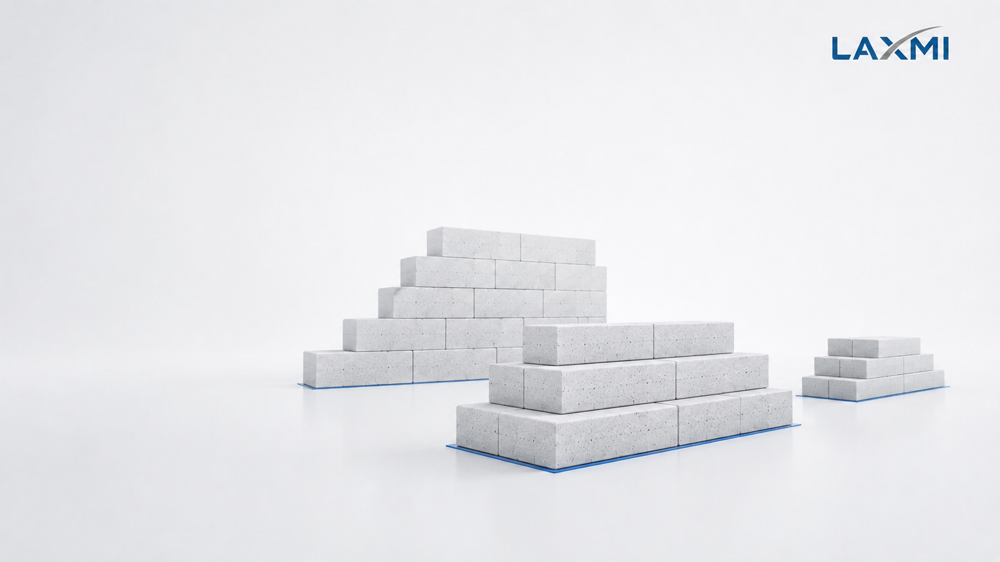

Rated capacity
Theoretical output under defined operating conditions.

AAC investor academy · Capacity planning
The right AAC plant capacity balances saleable demand, delivered cost, realistic utilisation and future expansion—before machinery is finalised.
Capacity must be evaluated against project-specific assumptions.
01 · Understand
A plant should be large enough to remain commercially competitive, yet disciplined enough to avoid unnecessary capital exposure.
Financial feasibility should be based on realistic saleable production—not machinery nameplate capacity alone.
Theoretical output under defined operating conditions.
Expected output after operating hours, maintenance and process availability.
Dispatchable output after verified loss, rejection and handling damage.
The central trade-off
Undersized
Management, supervision, quality control, utilities and factory overhead may remain fixed or step-fixed within a production range.
Oversized
Financing, depreciation, infrastructure and working capital increase while early-stage utilisation may remain low.
“What volume can we produce, sell and deliver competitively—and how should the plant grow with the market?”
02 · Evaluate
Each factor changes both engineering scope and commercial risk. They must be evaluated together, using visible assumptions.
Base capacity on saleable regional demand—not broad national potential.
Evaluate freight and handling by distance band because delivered cost defines the practical market.
State operating days, shifts, maintenance allowances and equipment availability.
Test conservative, base and high-demand scenarios instead of assuming immediate full output.
Allow for verified process loss, rejection, breakage and quality-related holding.
Blocks, panels, lintels and special profiles place different demands on the process.
Balance every stage for future throughput; reserved land alone does not create expandability.
Preliminary calculation
The calculation provides an initial capacity requirement. Seasonality, product mix, bottlenecks, utilities, storage and dispatch must still be evaluated.
Required rated capacity per day
Target saleable volume
Operating days × expected utilisation × saleable yield
The complete production balance
Every major stage must support the same production plan. Otherwise installed capacity and practical output will diverge.
Grinding, slurry preparation, storage and dosing
Mixer output, mould volume, cycle time and mould availability
Pre-curing stability, available space and cutting-cycle capacity
Loading volume, cycle duration, handling and steam availability
Separation, packing, storage and vehicle loading
03 · Decide
Expansion-ready design does not mean purchasing every future machine today. It means protecting the provisions that become difficult or expensive to change later.
| Strategy | Potential advantage | Principal risk | May suit |
|---|---|---|---|
| Smaller initial plant | Lower initial capital exposure | Higher unit cost or restricted growth | Limited demand with practical expansion |
| Balanced commercial plant Preferred principle | Investment aligned with realistic demand | Requires reliable feasibility inputs | Established regional opportunity |
| Expansion-ready plant | Controls early investment while preserving growth | Poor Phase-1 design can disrupt expansion | Demand expected in identifiable stages |
| Large initial plant | Serves substantial demand without early expansion | Low utilisation and high financial exposure | Contract-backed or strongly validated demand |
Laxmi En-Fab methodology
Market planning Target territory, achievable sales, competitor presence, delivery economics and product mix.
Process engineering Raw-material route, production balancing, autoclaves, steam, utilities, manpower and expansion.
Financial planning Capital priorities, cost per saleable m³, working capital, break-even sensitivity and phased investment.
Investor questions
There is no universally best capacity. The right choice depends on achievable demand, delivered cost, utilisation, product mix, available capital and the practical route to expansion.
No. Rated capacity is a design figure under stated conditions. Achievable and saleable production are affected by maintenance, raw materials, product mix, process stability, rejection and handling loss.
Not necessarily. Scale can distribute fixed costs across more output, but only when enough saleable demand and utilisation exist. Low utilisation and high financing exposure can offset that advantage.
Many configurations can be expanded, but the original design must account for raw-material preparation, casting, cutting, autoclaving, steam, packing, utilities and material flow.
Freight changes delivered cost and therefore the market a plant can serve competitively. Capacity should be linked to demand within commercially viable distance bands.
Proposed location, target territory, expected monthly sales, raw-material route, product mix, available land, project timeline and future growth plan.
Before machinery is finalised
Share your location, target market, expected monthly demand, product mix and expansion plan. Receive a focused discussion around the assumptions that should shape your plant configuration.